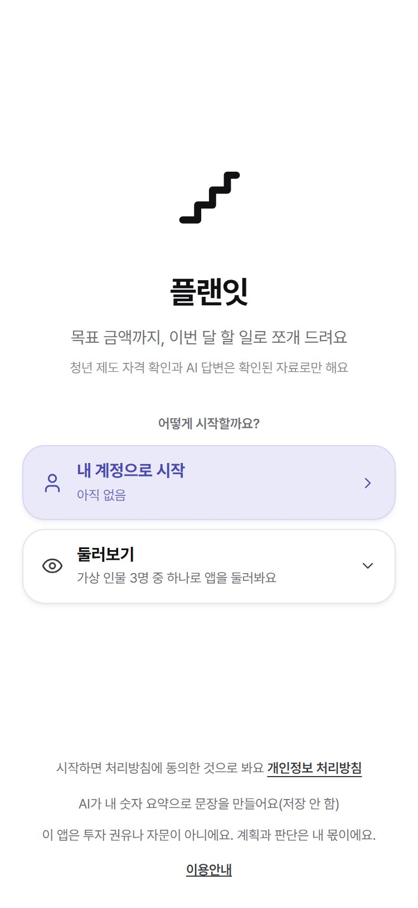
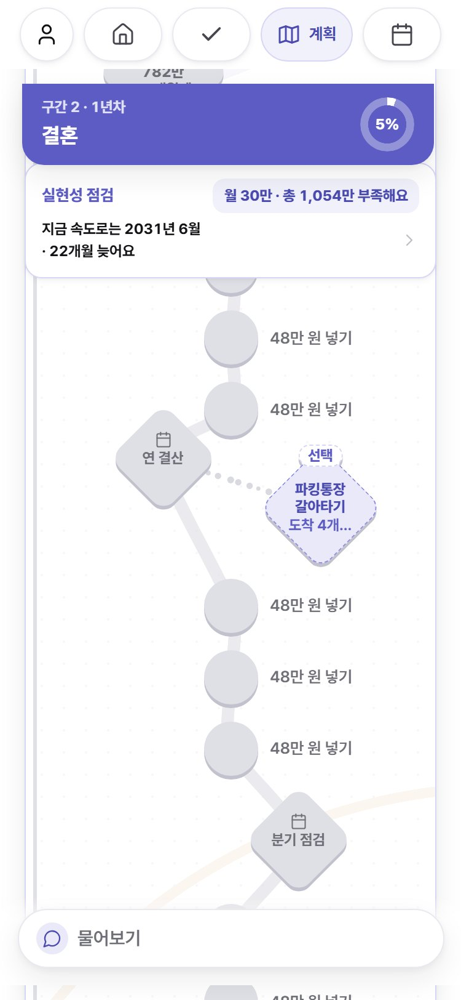
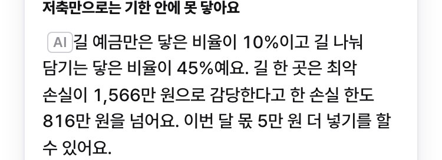
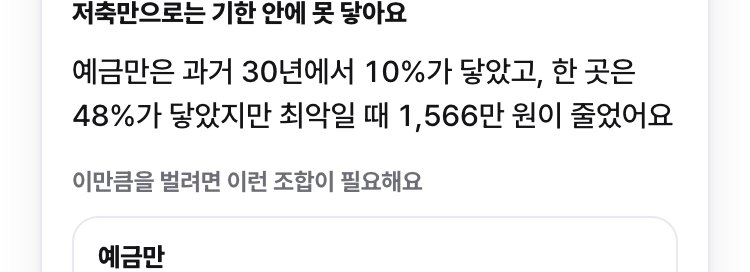
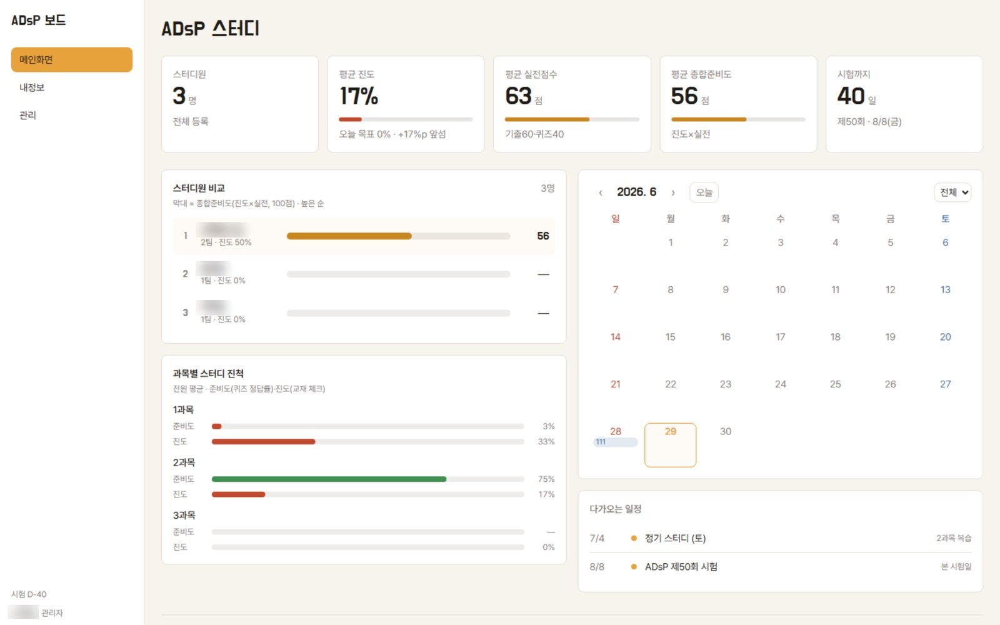

목표를 잡고, toy에서 멈추지 않게
오늘 순서 · 네 파트


나갈 때 남는 것 · 내 목표 카드
얻는 것 · 모르는 분야에서 AI와 일할 때 기준부터 세우는 순서를 본다
플랜잇 주제 선정 · 금융 지식 없이 혼자 출품한 금융 AI 공모전
통과 조건 8 · 배점 5축
항목마다 출처
후보를 먼저 보면
기준이 후보 쪽으로 휜다
기준을 저장한 뒤에야
봉인을 푼다
후보 4건 전부가
합격선 아래
후보를 버리고
새로 짰다
숫자는 규칙 엔진, AI는 판정 문장 하나


ADsP 보드 · 스터디 10명이 쓴 정리본·문항·코드 전부 AI 제작 · 틀린 문항 하나가 열 명을 잘못 끈다
원천 페이지 번호가 없는 문장은 폐기
정리본과 퀴즈를 따로 생성
구현 모델과 검수 모델을 분리
검수에서 오류를 잡아 배포 전 수정
시험 9일 전 기출 300문항을
절별로 분류해 출제 빈도
등급 기준은 사람이 정했다

AI가 쓴 문장마다 출처를 확인하고,
검토는 다른 AI나 원문으로
플랜잇 검수 · 혼자 출품이라 사용자도 심사위원도 없어 AI로 대신
지적 1건에 설명 1문장이 쌓여 화면만 길어졌다
로직 결함 0건
의견과 제안은 금지
첫 실행 42항 불통과 · 기획에 없던 결함 18건
얻는 것 · 무엇을 만들 때 어떤 도구를 쓰는지 한 번에 본다
조각마다 쓰는 도구가 다르다
네 조각 모두 AI 에이전트(Copilot 등)에게 말로 시켜 만든다
무료 한도가 작아
기능 하나씩 시킨다
처음부터 프레임워크를 쓰면
설치에서 막힌다
Supabase 무료는 1주 미사용 시 자동 정지
발표 당일 다운 주의
Vercel 무료는 비상업 전용
Streamlit은 12시간 안 쓰면 잠든다
API 키는 화면 코드에 넣지 않는다
AI Studio 무료 API는 입력이 학습에 쓰인다
Copilot 에이전트 모드와
Claude Code 모두 지원
Looker Studio는 코드 없이
구글 시트에 바로 연결
옛 이름 NotebookLM · 자료 소화 · 근거 수집
Gamma 무료 400크레딧 1회성 · 로고 표시
규격 파일을 주고 AI가 HTML로 만든다
1080p 무료
Pro 템플릿을 쓰면 워터마크
월 200크레딧 · 음성 분석 200분
한국어 자막 자동 생성
일 50크레딧 무료
2차 자료 수치 · 안내 전 공식 확인
얻는 것 · 자주 하는 과제 세 가지를 세 단계로 깊게 만드는 법
STP · 신제품 기획 팀플 · toy → 쓸 만함 → 포트폴리오급
가격을 언급했나
예 · 아니오배송 불만인가
예 · 아니오재구매 의사가 있나
예 · 아니오정보형 · 비교형 · 구매형으로 나누면 구매 단계별 수요가 보인다
AI에게 「20대처럼 답해 줘」로 설문을 대신시키지 않는다 · 가상 응답자는 부풀려지고 치우친다는 연구
리뷰 수집 전 사이트 약관 확인
재무·투자 수업 · 금융 스터디 · toy → 쓸 만함 → 포트폴리오급
기업·종목 분석에서 일을 나누는 기준
틀리면 안 되는 숫자
뉴스 헤드라인을 신호로 쪼개 묻는다
결과물에 투자 권유 아님 표시
AI는 과거 사건의 결과를 이미 학습했을 수 있다
→ 과거 데이터로 「맞혔다」는 결과가 부풀려진다
참고 · 헤드라인 감성 점수가 다음 날 수익률을 예측했다는 연구(Lopez-Lira·Tang)
조사방법론 · 소비자행동 · 팀플 설문 · toy → 쓸 만함 → 포트폴리오급
설문 응답을 AI 가상 응답자로 채우지 않는다
beri 독립 실측 · 피싱 메일 2,000건 · 같은 모델, 같은 표본
「이것이 피싱인가」
한 번에 묻는다
단축 URL · 조직 사칭 같은
신호 5개로 쪼갰다
질문 설계가 성능 변수다
올린 것은 질문 분해와 라벨 1,000건
0.9 이상 · 0.1 미만은 자동, 남는 검토량을 잰다
얻는 것 · 오늘 나갈 때 11/16까지 만들 것 하나를 정한다
평가 기준 · 탈락 조건
4장 사례그 목록이 조사 범위가 된다
「피드백 줘」 대신
예·아니오로 답하게 한다
원천 · 다른 모델 · 데이터로
판정한다
재무비율은 코드, 해석 초안은 AI
가정과 결론은 사람
대화하며 각자 채운다 · 작성 예시는 다음 장
한 문장으로 적는다
나 · 스터디 · 면접관
공모전 심사위원
11/16에 무엇이 되면
성공인가
어디서 가져오나
이번 주에 만들 것
작성 예시 · 회차 2에서 본 공모전 앱
목표 금액까지 가는 길을 거꾸로 계산해
이번 달 할 일로 쪼개는 플래너
목돈 목표가 있는 청년 · 공모전 심사위원
심사위원이 주소 하나로 가입부터 계획 확인까지
막힘없이 쓴다 마감 9/7
아이디어 → 포트폴리오급
배포 · DB · AI 서버 함수 · 정답 세트 채점
청년 금융 제도 · 과거 30년 시장 수익률
목표 금액과 기한을 넣으면 매달 넣을 돈을 역산
구간별 할 일 · 실현성 점검
학기 말, 주소로 열리는 것 하나
목표를 잡고, toy에서 멈추지 않게
이름을 누르면 원문이 열린다 · 도구 요금·한도는 2026-09-28 확인, 변동 가능